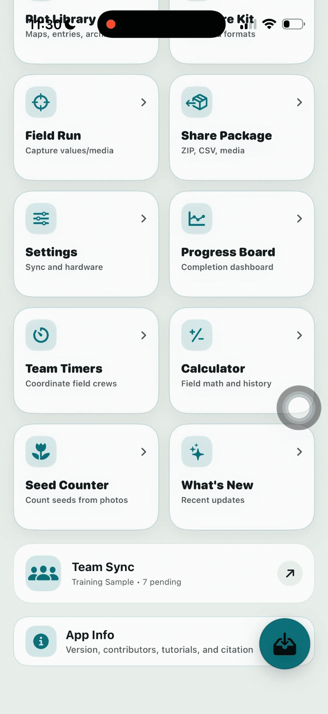
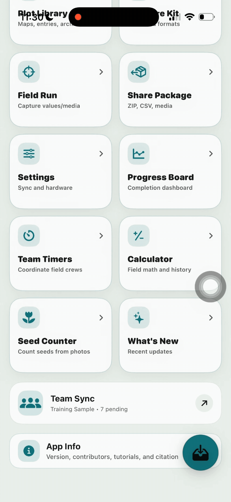
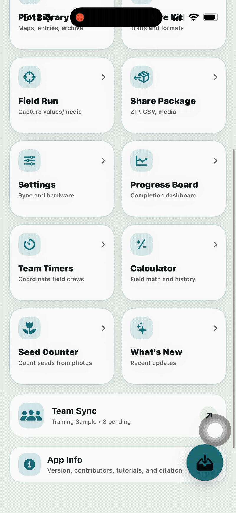

Collect. Collaborate. Track.
TraitTrack is a collaborative field-phenotyping application designed to help researchers collect, synchronize, manage, and review plant trait data directly during field experiments.
Get started →What is TraitTrack?
TraitTrack is an iOS application for collecting structured phenotypic observations in the field. Observations are organized within shared projects rather than remaining isolated on individual devices.
Field collection
Record trait observations directly against plots, entries, or other experimental units while working in the field.
Collaboration
Multiple collaborators can contribute observations to the same project using their own devices.
Synchronization
Local observations can be synchronized with a shared project backend as connectivity becomes available.
Rich observations
Observations can include photographs, location information, notes, and other project metadata.
What makes TraitTrack unique?
TraitTrack is built around the reality of collaborative field phenotyping: several people may be collecting data at the same time, connectivity may be unreliable, and project owners need to know what has been collected before the field season is over.
Getting Started
Set up TraitTrack, create the project structure, and give collaborators access before beginning field collection.
Installation
TraitTrack uses an iOS client for field collection and can connect to a shared cloud-based backend for collaborative project storage and synchronization.
iOS application
TraitTrack is designed for Apple devices running iOS 17.0 or later. The application is built with Swift and SwiftUI.
Cloud-based collaboration
For collaborative projects, TraitTrack can use a dedicated backend consisting of a REST API and shared database. The documented server architecture uses FastAPI with PostgreSQL.
TraitTrack app
Installed on each collaborator's iOS device and used for field data collection.
Cloud API
Provides the shared interface through which devices exchange project and observation data.
PostgreSQL
Provides persistent storage for the collaborative project data.
Optional media storage
Server-based deployments can use Amazon S3 for photographs and other media attachments.
Google Drive
TraitTrack can also work with Google Drive as a shared storage provider. This is different from using a dedicated collaboration server for live reconciliation of concurrent changes.
First Project
A TraitTrack project defines the experimental structure, traits, collaborators, and observations that will be collected during the study.
Create the project
1. Create a project
Create a new project and provide the information required to identify the experiment.
2. Define the experimental units
Organize the project around the plots, entries, or other experimental units that will receive observations.
3. Define the traits
Specify which phenotypic variables will be measured and how their values should be recorded.
4. Add collaborators
Give each field collector access to the project before collection begins.
TraitTrack data format
TraitTrack uses a structured project model. At a basic level, an observation connects an experimental unit to a trait and a recorded value.
| Field | Purpose |
|---|---|
| Project | Identifies the experiment or study. |
| Plot / entry | Identifies the experimental unit being observed. |
| Trait | Identifies what is being measured. |
| Trait format | Defines how the observation is represented, such as numeric, categorical, Boolean, date, scale, location, or media. |
| Value | Contains the actual observation recorded in the field. |
| Observer | Identifies the collaborator who recorded the observation. |
| Timestamp | Records when the observation was collected or modified. |
| Media / metadata | Connects photographs, location information, notes, or other supporting information to the observation. |
Supported trait types
Basic
Text, numeric, percentage, angle, Boolean, date, counter, and scale values.
Categorical
Qualitative observations and categorical scoring systems.
Field measurements
Disease ratings, stopwatch measurements, and location/GNSS observations.
Media
Photographs, audio, and video associated with observations.
Identification
Barcode-based identification of field material or experimental units.
Hardware-assisted
Sensor and external-camera workflows where supported by the application.
Collaborators
TraitTrack is designed for multiple people to collect observations within the same project.
Project owner
Creates and manages the project, configures the experimental structure, and monitors overall collection.
Field collaborators
Use their own iOS devices to collect observations, photographs, notes, and supported measurements.
Shared project state
Collaborators contribute to the same project rather than creating independent datasets for later manual merging.
Using TraitTrack
TraitTrack has two primary uses: managing the project and collecting observations in the field.
Data Management
Data Management contains export, progress, collaboration, utility, settings, update, and application-reference tools.
Share Package
Completion dashboard
Share Package is the export flow used by the Plot Library, Field Run, and standalone Share Package menu.
- Format — Database (long format) or Table (wide format).
- Field columns — Only unique identifier or All imported columns.
- Traits — Only active traits or All traits.
- Bundle media data with export file — includes attached photos, videos, and audio.
- Output name — traittrack-export, saved as traittrack-export.zip.
- Overwrite previous report — replaces the existing export.
If a staged export with the requested name already exists, the new file uses the next available numbered name.
Which format to choose
- Database (long) — one observation per row with metadata such as trait, value, timestamp, person, device_name, attached_photo, and additional_info. Use it when every reading needs to remain traceable or for database/R/Python analysis.
- Table (wide) — one column per trait alongside plot identifiers such as plot, plot_id, row, column, germplasm, and pedigree. Use it for quick spreadsheet review.

Use Share Package to export project data from the Plot Library, Field Run, or standalone Share Package menu. Choose between Database (long) and Table (wide) formats, select the desired traits and field columns, and optionally include media.
Progress Board
Completion dashboard
The Progress Board is a read-only overview of the current project. It reports:
- Fields
- Entries
- Data
- Hours
- Collectors
- Photos
- Busiest Day
- Most Observed
- Recent Activity
Use it at the end of each field session to confirm progress before syncing or exporting.

The Progress Board provides a read-only overview of project completion, including fields, entries, observations, hours, collectors, photos, busiest day, most observed traits, and recent activity.
Team Sync & Team Workspace
TraitTrack supports Personal Projects and Team Collaboration. Personal Projects need no backend, sign-in, or invite; data stays local and can be shared through Export. Team Collaboration connects multiple iPhones or iPads to the same live project.
Team setup checklist
- Paste the backend API URL and tap Check Backend. The URL must be a
TraitTrack sync API endpoint, such as
http://192.168.x.x:8770on a Mac Wi-Fi network. Google Drive, Docs, iCloud, Dropbox, and OneDrive links are not valid here. - Tap Sign In to Collaboration.
- The owner creates the shared project and invite; teammates scan the invite QR or paste the invite code.
- Tap Sync Now once. Active devices then sync roughly every 30 seconds and media moves through the shared media folder.
What syncs and how
- Auto-sync runs approximately every 30 seconds while the app is open.
- Media sync follows the same cycle. An owner can set a photo mirror folder in Google Drive, OneDrive, Dropbox, or iCloud Drive.
- Prepared CSV/ZIP exports move through the backend files API when a sync runs.
Owner Dashboard
- Backend
- Cloud Provider
- Team Presence
- Sync Queue
- Shared Media
- Plot Progress
Deployment is blocked until the backend URL is correct; the dashboard reports this at the top.
Menu 11 — Team Sync is a shortcut into the same collaboration workspace, opening directly at the sync section of Settings.

Configure the backend connection, sign in to collaboration, create or join a shared project, and synchronize observations and media between field devices.
Team Timers
Team Timers is a lightweight board of stopwatches for crews or field tasks. Reset All and Start All control every timer, and Add Team creates a named timer.
The Board Actions menu includes Rename board, Edit board, Add a timer, Web Share, Export, Copy board, and Delete board.

Use Team Timers to manage multiple field stopwatches. Timers can be started individually or together, renamed, exported, shared, copied, or deleted.
Calculator
The Calculator is a standard calculator with a History button in the top bar for returning to previous calculations recorded during the field run.

Use the Calculator for field calculations and open History to review previous calculations recorded during the field run.
Settings
Settings opens with Search Settings followed by grouped subsections for identity, collaboration, field tools, interface, movement, navigation, audio, BrAPI, diagnostics, storage, and preview features.

Settings provides access to collector identity, collaboration, field tools, interface preferences, movement, navigation, audio, BrAPI, diagnostics, storage, and preview features.
What's New
The What's New screen lists short, dated release notes for the current iOS build.
App Info
The App Info screen collects reference information about the release.
App Info provides reference information about the installed TraitTrack release and application build.
Field Data
Field Data contains the tools used to prepare plots and traits, collect observations, and capture field measurements.
Main Menu
When TraitTrack opens, the Main Menu is the first screen you see. At the top is the app title, followed by three counters that give an at-a-glance snapshot of the current work:
- Active plots — how many plots are ready for collection.
- Traits on the deck — how many traits are queued for the next field run.
- Values saved — how many observations have been recorded so far.
Below the counters are the twelve menus that organize every feature in the app. The first four handle field data (plots, traits, collection, export). The remaining eight handle project management, settings, and reference (progress, team coordination, tools, settings, updates, sync, and app information).

The Main Menu provides access to TraitTrack's field-data, project-management, collaboration, utility, settings, and reference features.
Plot Library
Maps, entries, archives
The Plot Library stores every field or trial imported into TraitTrack. From here you can open, sort, share, or archive the plot libraries you work with.
Top-bar controls
- Sort menu — sort libraries by Import format, Edit date, Sync date, Export date, or Name. The same menu includes Expand All Groups and Collapse All Groups.
- View toggle — switch between grouped view and list view.
- Share All — export every library at once.
- Save — keeps changes made to the current view.
Working with a plot library
Tap Select All, or tap an individual library, to enable batch actions:
- Share Package — export the selected libraries.
- Group — rename the group the libraries belong to, or archive them.
Opening a library
Tap a training sample (CSV file) to see its full record card:
- The file name and plot-count icon.
- An info icon listing imported plot-information fields: plot_id, row, column, plot, replicate, germplasm, and pedigree.
- Rename and Color controls.
- A trait count and a sort menu with the available fields.
- A barcode-scan target labeled plotid. Search ID → Attribute lets you choose plot or plot_id, with an option to apply the choice to all compatible fields.
The record card also shows when the library was Imported, Edited, Exported, and Synced. Start Field Run at the bottom opens the Collect screen.

Use Plot Library to view imported trials, sort and group libraries, inspect plot information, manage traits, and start a Field Run.
Measure Kit
Traits and formats
The Measure Kit is where you decide which traits are visible during a field run.
- Select All / Deselect All buttons appear at the top. Deselect All keeps the first selected trait active so collection always has at least one trait available.
- Each trait row shows the trait name, up/down arrows for reordering, and a three-dot menu for removal.
- The green + icon opens New Trait, where you choose from available trait categories and add a new trait.
The order of traits here is the order in which they appear on the collection screen.

Use Measure Kit to select, add, remove, and reorder the traits that will appear during a field run.
Field Run
Capture values / media
The Field Run screen is the working screen used in the field. It opens on the current training sample and shows plot progress at the top.
Trait selector
The drop-down lists every trait defined in the Measure Kit. Each row includes:
- Up/down arrows to reorder traits on the fly.
- A three-dot menu with Edit trait, Copy trait, and Delete trait.
- A caption explaining that selected traits appear during collection and at least one trait must remain selected.
Navigation
- Green arrows move between traits.
- Black four-direction arrows move between plots by row or range while staying on the same trait.
- Navigate → Search provides filtered record search and quick text search.
- Data Grid opens a table-style view of the current run.
Record tools
- Plot photo
- Notes and files
- Voice note
- Lock data / Freeze data
Review
- Save plot commits the current entries.
- Summary opens a plot-level review card.
Field Detail summary
Once a plot is saved, the Field Detail panel shows the trait count, color tag, and a Completion overview with a legend explaining the progress icons. Share Package can also be invoked from this panel.

Field Run is the primary data-collection interface. Navigate between plots and traits, enter observations, capture media, add notes, and save completed plots.
Seed Counter
Count seeds from a photo
The Seed Counter uses a photograph to estimate the number of seeds in a sample. The app reminds users to review highlighted seeds before saving.
Identify the sample
- Responsible person — the collector performing the count.
- Scan Plot or Accession Barcode — jump directly to a plot.
- Search Barcode or enter Plot number, Accession number, and Genotype or accession name.
- Species — Corn/Maize, Sorghum, Rice, Wheat, Arabidopsis, or Other.
Photograph tips
- Use a plain contrasting background.
- Spread seeds with minimal overlap.
- Avoid shadows and glare; keep the phone parallel to the surface.
Capture and confirm
- Take Seed Picture or Choose Existing Picture.
- Confirm & Save Seed Count commits the result after checking that an analyzed picture, responsible person, and plot/accession/barcode identifier are present.
Seed counts can be exported individually as CSV, PDF, JSON, or ZIP.

Use Seed Counter to photograph a seed sample, identify the sample and responsible collector, review highlighted seeds, and save the resulting seed count.
Support
If something is not working as expected, first determine whether the problem is related to the device, project access, synchronization, or the observation itself.
Data is not synchronizing
Check the network connection, pending uploads, and synchronization status. Try again when a stable connection is available.
A project is missing
Confirm that you are signed into the correct account and have been added to the project as a collaborator.
An observation is missing
Check the device where the observation was collected and its synchronization status before assuming the record has been lost.
An image is still uploading
Observation synchronization and large media transfers may complete at different times. Check the media transfer state separately.
Conflicting edits
Use the application's conflict-detection and resolution workflow rather than manually merging competing records.
Unexpected behavior
Record the application version, device, project, steps that produced the problem, and any relevant error message.
When reporting a problem
Include enough information for the problem to be reproduced. At minimum, provide the application version, iOS version, device type, project context, what you expected to happen, and what actually happened.
For synchronization problems, also note whether the device was online and whether other collaborators were able to synchronize successfully.
Reference
Keep technical details here that need to remain consistent across the guide.
Application
TraitTrack Version 1.2.0 (build 1.1), based on the current manuscript documentation.
Client
Swift 5 and SwiftUI on iOS.
Collaboration backend
FastAPI and PostgreSQL, with optional Amazon S3 media storage.
Interoperability
BrAPI support connects TraitTrack with breeding-data systems and existing breeding workflows.